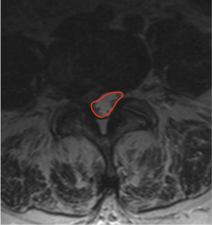

Adapted from: Feger J, Er A, Yap J, et al. Lumbar spine protocol (MRI). Reference article, Radiopaedia.org (Accessed on 01 Jan 2026) https://doi.org/10.53347/rID-147093
1) Description of Measurement
Dural sac CSA quantifies the cross-sectional area of the thecal sac within the lumbar spinal canal and directly reflects neural element compression from disc bulge, ligamentum flavum hypertrophy, facet overgrowth, or spondylolisthesis.
This metric isolates the functional neural space, making it more clinically relevant than osseous canal area when evaluating lumbar spinal stenosis and neurogenic claudication.
2) Instructions to Measure
3) Normal vs. Pathologic Ranges
Key points:
4) Important References
Abel F, Tan ET, Chazen JL, et al. MRI after Lumbar Spine Decompression and Fusion Surgery: Technical Considerations, Expected Findings, and Complications. Radiology. 2023 Jul;308(1):e222732. doi: 10.1148/radiol.222732.
Hansen BB, Nordberg CL, Hansen P, et al. Weight-bearing MRI of the Lumbar Spine: Spinal Stenosis and Spondylolisthesis. Semin Musculoskelet Radiol. 2019 Dec;23(6):621-633. doi: 10.1055/s-0039-1697937.
Genevay S, Atlas SJ. Lumbar spinal stenosis. Best Pract Res Clin Rheumatol. 2010 Apr;24(2):253-65. doi: 10.1016/j.berh.2009.11.001.
5) Other info....
Dural sac CSA is preferred over bony canal CSA because it reflects true neural compression.
Should be reported with:
Dynamic stenosis may be underestimated on supine MRI; consider axial-loaded or upright MRI when symptoms and CSA do not correlate.